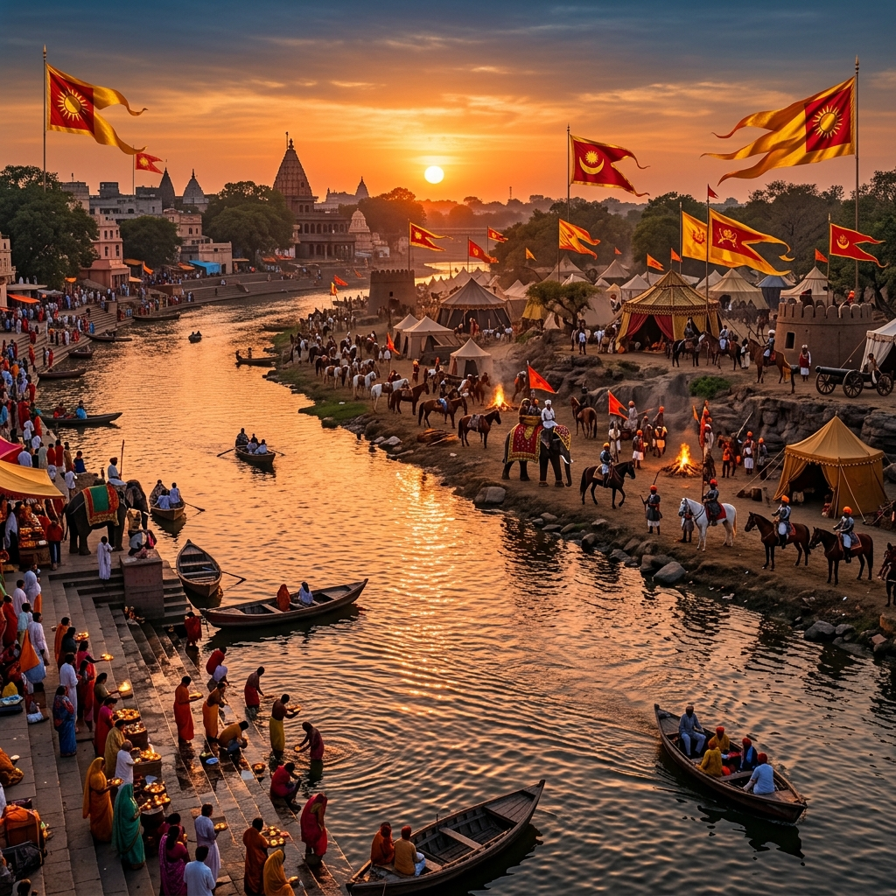
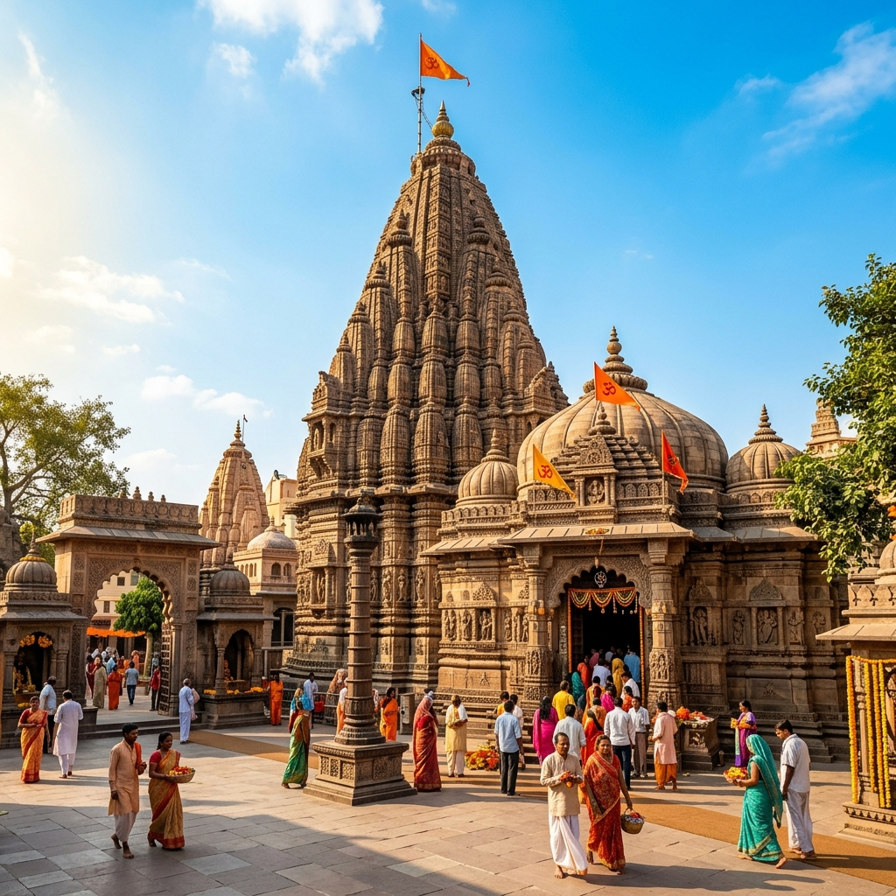

Battle of Ujjain Explorer
Step onto the banks of the sacred Shipra River. Discover the epic clash of Maratha titans where Yashwantrao Holkar of Indore defeated Daulat Rao Scindia's grand army and captured the ancient capital city of Ujjain.
A Clash of Maratha Powers
At the turn of the 19th century, the Maratha Confederacy was fractured by intense internal rivalries. The most prominent conflict was between Yashwantrao Holkar, the Maharaja of Indore, and Daulat Rao Scindia of Gwalior. Tensions peaked in mid-1801 when Scindia's forces attacked and plundered Indore, destroying Holkar territories.
Seeking retribution, Yashwantrao Holkar reorganized his legendary light cavalry and marched north toward Scindia's rich capital city, Ujjain. In October 1801, on the plains bordering the Shipra River, Holkar's forces faced Scindia's defensive lines, which were anchored by a highly trained, European-officered brigade.
🏛️ At a Glance
- Conflict: Maratha Civil Wars (Holkar-Scindia rivalry).
- Location: Plains of Ujjain, Madhya Pradesh.
- Outcome: Decisive Holkar victory; Ujjain captured.
- Significance: Established Yashwantrao Holkar as a leading military genius.
Opposing Armies at Ujjain
The conflict matched Holkar's fast-moving Maratha cavalry against Scindia's disciplined, British-style artillery lines.
Yashwantrao Holkar
Sovereign of Indore, commanding a highly mobile cavalry division. Famous for his brilliant guerrilla tactics and personal bravery on the field.
John Hessing's Brigade
A Dutch soldier of fortune commanding Daulat Rao Scindia's modern infantry brigade, which was trained and officered by European mercenaries.
The Artillery Duel
Scindia deployed a heavy artillery line, but Holkar's swift outflanking maneuvers and rapid cavalry charges overwhelmed the gunners before they could reload.
Timeline of the Ujjain Campaign
Follow the military events of the 1801 campaign.
Plunder of Indore
Scindia's forces capture and plunder Holkar's capital city, Indore, sparking a vow of revenge from Yashwantrao.
Retaliatory March
Yashwantrao Holkar reorganizes his cavalry and launches a rapid, unexpected march towards Ujjain.
The Battle of Ujjain
Holkar forces clash with Scindia's army. Yashwantrao leads a charge that decimates the European brigade.
Capture of Ujjain
Holkar captures Ujjain, collecting a war indemnity of 15 lakh rupees while ordering his troops to spare the city's temples.
Relics and Sites of Ujjain
Explore the historic battle grounds and shrines of ancient Ujjain.

Shipra River Banks
The historic riverside plains where Holkar's cavalry forces camped before the assault.

Holkar's Cavalry Charge
Yashwantrao's swift horsemen charging and routing Scindia's artillery line.

Mahakaleshwar Temple
The sacred Shiva shrine that was protected from plunder by Holkar's royal decree.
📚 References & Further Reading
- Chaurasia, R. S. (2004). History of the Marathas. Atlantic Publishers.
- Duff, James Grant (1826). A History of the Mahrattas. Longmans.
- Sardesai, G. S. (1948). New History of the Marathas. Phoenix Publications.
- Holkar State Records (N.D.). Cavalry maneuvers and indemnity logs at Ujjain.